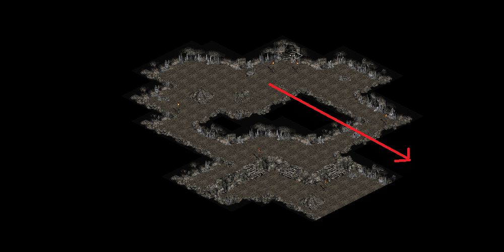
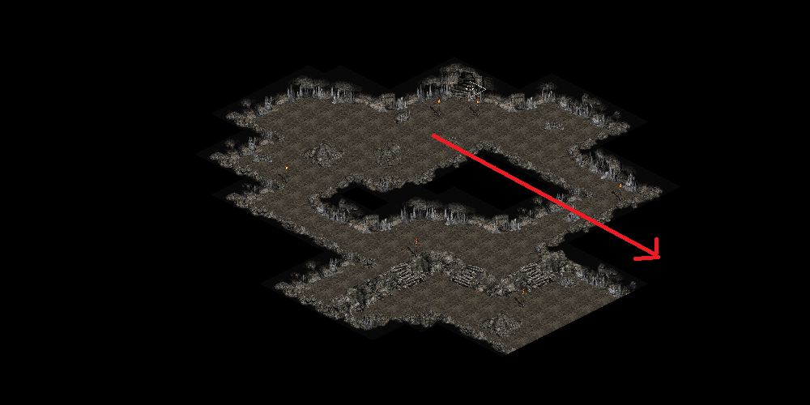

- Blood Moor to Den of Evil - Follow Road
- Blood Moor to Cold Planes - Follow Road
- Cold Planes to Burial Grounds - Follow Road & Corner
- Crypt to Bonebreaker & Gold Chest - Left
- Mausoleum to Golden Chest - Left
- Cold Planes to Cave Level 1 - Follow Road
- Cold Planes to Stony Field - Follow Road & Near center of an edge and away from Burial Grounds
- Stony Field to Stone Circle - Near Road
- Stony Field to Underground Passage - Follow Road & On border or randomly inside
- Underground Passage 1 to Underground Passage 2 - Left
- Underground Passage 1 to Dark Woods - Straight
-
 



- Dark Woods to Black Marsh - Follow Road
- Black Marsh to Hole Level 1 - Follow Road (unless river spawns on map?)
- Hole Level 1 to Hole Level 2 - Left
- Forgotten Tower Levels 1-4 to Next Level - Left
- Black Marsh to Hole Level 1 - Follow Road
- Black Marsh to Tamoe Highlands - Follow Road & Any Edge Except Bottom Left
- Tamoe Highlands to Pit Level 1 - Follow Road
- Tamoe Highlands to Outer Cloister - Follow Road & Top Right
- Barracks to Malus - Left or Straight
- Barracks to Jail Level 1 - Left or Straight
- Jail Level 1 to Waypoint - Left
- Jail Level 1 to Jail Level 2 - Straight
- Jail Level 2 to Pitspawn Fouldog - Left
- Jail Level 2 to Jail Level 3 - Straight
- Jail Level 3 to Inner Cloister - Left
- Catacombs Level 2 Waypoint to Catacombs Level 3 - Right
- Town to Sewers Level 1 - Bottom Entrance Recommended?
- Sewers Level 2 to Waypoint - Left
- Sewers Level 2 to Sewers Level 3 - Straight
- Sewers Level 3 to Radamant - Left
- Stony Tomb Level 1 to Stony Tomb Level 2 - Left
- Stony Tomb Level 2 to Golden Chest - Left
- Stony Tomb Level 2 to Creeping Feature - Straight
- Rocky Waste to Dry Hills - Random Corner (Possibly next to town)
- Halls of the Dead Level 1 to Level 2 - Left
- Halls of the Dead Level 2 to Waypoint - Straight
- Halls of the Dead Level 2 Waypoint to Level 3 - Right
- Halls of the Dead Level 2 to Level 3 - Left
- Halls of the Dead Level 3 to Golden Chest (Cube) - Left
- Dry Hills to Rocky Waste - Random Corner
- Dry Hills to Far Oasis - Corner
- Maggot Lair Level 1 to Maggot Lair Level 2 - Right
- Maggot Lair Level 2 to Maggot Lair Level 3 - Right
- Maggot Lair Level 3 to Golden Chest (Staff) - Straight
- Far Oasis to Lost City - Random Corner
- Ancient Tunnels to Golden Chest - Left
- Lost City to Valley of the Snakes - Corner N/E/W (Not S)
- Claw Viper Temple Level 1 to Level 2 - Left
- Tal Rasha's Tomb (incorrect) to Golden Chest / Unique Pack - Left
- Tal Rasha's Tomb (correct) to Duriel - Left
- Spider Forest leads to Great Marsh
- Spider Forest may also lead to Flayer Jungle
- Great Marsh may lead to Flayer Jungle
- Great Marsh camps may lead to Spider Forest or Flayer Jungle
- The River connects all 3 areas, follow the river if you get lost
- Spawmpy Pits Level 1 to Swampy Pits Level 2 - Left
- Spawmpy Pits Level 2 to Swampy Pits Level 3 - Left
- Flayer Dungeon Level 1 to Flayer Dungeon Level 2 - Left
- Flayer Dungeon Level 2 to Flayer Dungeon Level 3 - Left
-
Closed door is a good indicator that is the correct direction?
- Flayer Jungle exits to Lower Kurast
- Sewers Level 1 Sparkling Chest to Sewers Level 2 - Right (need source/image)
- Durance of Hate Level 1 to Durance of Hate Level 2 - Left
- Durance of Hate Level 2 to Waypoint - Left
- Durance of Hate Level 2 to Durance of Hate Level 3 - Straight
- River of Flame to Hellforge - Right or Left
- River of Flame to Chaos Sanctuarary - Straight
- Frigid Highlands to Arreat Plateau - North-West or North-East
- Arreat Plateau to Crystalline Passage - Center of Farthest Short Edge of Map (3 long edges, 1 short?)
- Crystalline Passage to Waypoint - Right
- Crystalline Passage to Frozen River - Straight
- Crystalline Passage to Glacial Trail - Left
-
There are 3 static maps from the Waypoint to Nithilak. You can very quickly find the next levelOn these speicific walls, look for the wall that has the skull as seen here
- Glacial Trail to Drifter Cavern - Straight
- Glacial Trail to Golden Chest & Bonesaw Breaker - Right
- Glacial Trail to Frozen Tundra - Left
- Frozen Tundra to Ancients Way - North-West or North-East
- Ancients Way to Icy Cellar - Straight
- Ancients Way to Waypoint - Right
- Ancients Way to Arreat Summit - Left
- Ancients Way Waypoint to Arreat Summit - Straight
- Worldstone Keep Level 2 Waypoint to Worldstone Keep Level 3 - Right